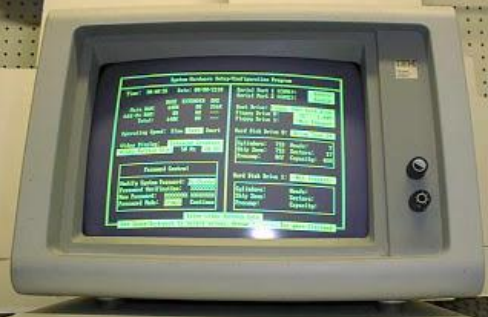
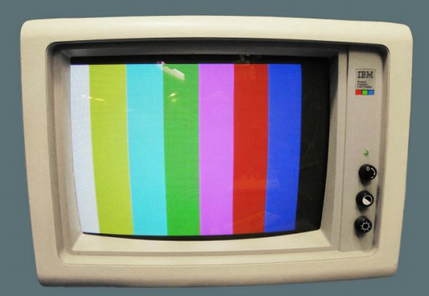
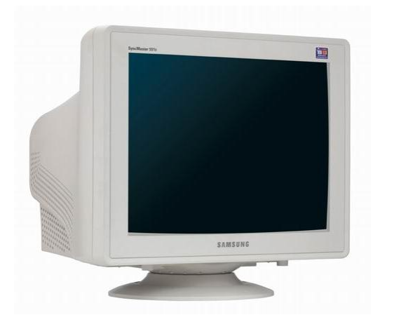
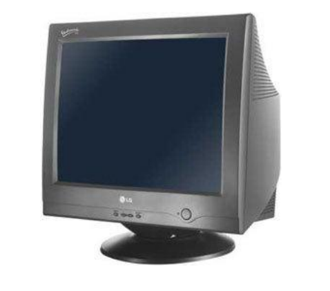
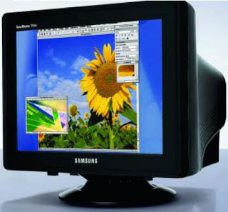
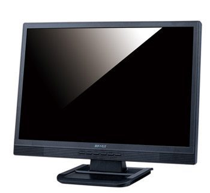
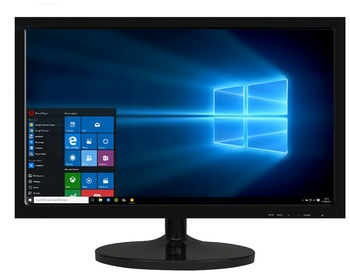
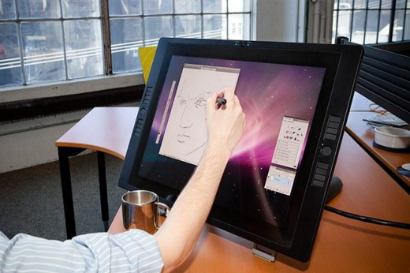

⠀
Historia:⠀
Los primeros monitores, aunque no tenian pantalla se comunicaba mediante unas pequeñas luces, que se encendían o se apagaban al acceder a determinadas posiciones de memoria o ejecutar ciertas instrucciones.⠀
MONITOR MDA: Por sus siglas en inglés “Monochrome Display Adapter” surgieron en el año 1981. Junto con la tarjeta CGA de IBM. Los MDA conocidos popularmente por los monitores monocromáticos solo ofrecían textos, no incorporaban modos gráficos. Este tipo de monitores se caracterizaban por tener un único color principalmente verde.⠀
⠀
MONITOR CGA: Los monitores CGA por sus siglas en inglés “Color Graphics Adapter” o “Adaptador de Gráficos en Color” en español. Este tipo de monitores fueron comercializados a partir del año 1981, cuando se desarrollo la primera tarjeta gráfica conjuntamente con un estándar de IBM.⠀
⠀
MONITOR EGA: Por sus siglas en inglés “Enhanced Graphics Adapter”, es un estándar desarrollado IBM para la visualización de gráficos, creado en 1984. Este nuevo monitor incorporaba una mayor amplitud de colores y resolución. EGA incorporaba mejoras con respecto al anterior CGA. Años después también sería sustituido por un monitor de mayores características.⠀
⠀
Monitor VGA: por sus siglas en inglés “Video Graphics Array”, fue lanzado en 1987 por IBM. A partir del lanzamiento de los monitores VGA, los monitores anteriores empezaban a quedar obsoletos. El VGA incorporaba modo 256 con altas resoluciones. Por el desarrollo alcanzado hasta la fecha, incluidas en las tarjetas gráficas, los monitores anteriores no son compatibles a los VGA, estos incorporan señales analógicas.⠀
⠀
Monitor SVGA: SVGA denominado por sus siglas en inglés “Super Video Graphics Array”, también conocidos por “Súper VGA”. Estos tipos de monitores y estándares fueron desarrollados para eliminar incompatibilidades y crear nuevas mejoras de su antecesor VGA. SVGA fue lanzado en 1989, diseñado para brindar mayores resoluciones que el VGA. Este estándar cuenta con varias versiones, los cuales soportan diferentes resoluciones.⠀
⠀
Pantallas LCD: A este tipo de tecnología se le conoce por el nombre de pantalla o display LCD, sus siglas en inglés significan “Liquid Crystal Display” o “Pantalla de Cristal Líquido” en español. Este dispositivo fue inventado por Jack Janning. Estas pantallas son incluidas en los ordenadores portátiles, cámaras fotográficas, entre otros, se fundamenta en sustancias que comparten las propiedades de sólidos y líquidos a la vez.⠀
⠀
PANTALLAS LED: Las siglas LED significan "Diodo Emisor de Luz" en inglés. La única diferencia que tienen las pantallas LED con las LCD es que las primeras cambian la retroiluminación que tienen mediante los tubos fluorescentes por diodos de luz blanca. Entonces, el consumo de las pantallas LED con respecto a las pantallas LCD, es menor. Esto nos dice que la tecnología LED es posterior a la de LCD.⠀
⠀
MONITORES TÁCTILES:⠀
Es una pantalla que mediante un toque directo sobre su superficie permite la entrada de datos que se asocian a la parte posterior de arriba del touch, siendo el componente que permite que funcione al dar sus datos y órdenes al dispositivo, y a su vez muestra los resultados introducidos previamente; actúa de esta forma como periférico de entrada y de salida al mismo tiempo, así como emulador de datos interinos erróneos al no tocarse efectivamente. Este contacto también se puede realizar por medio de un lápiz óptico o de otras herramientas similares.⠀
